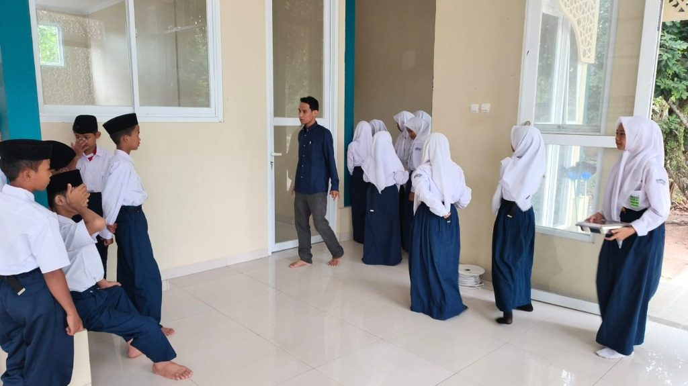
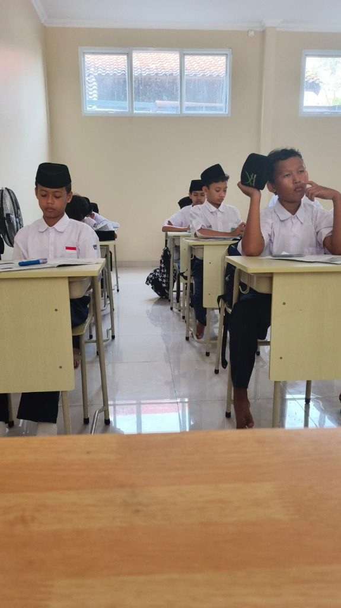
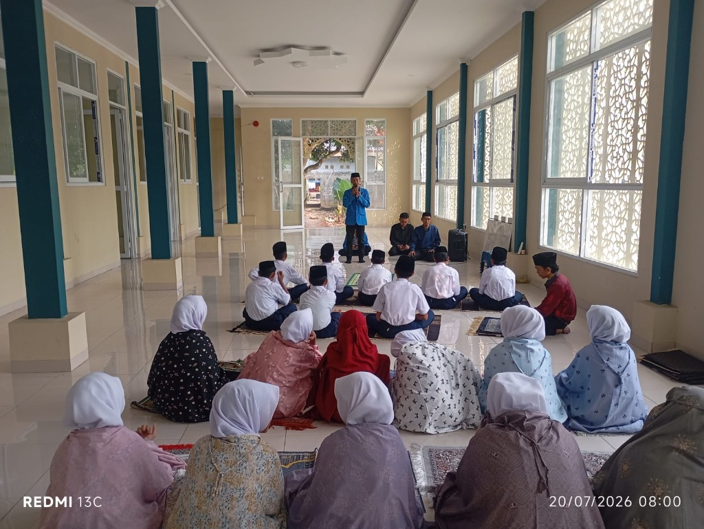
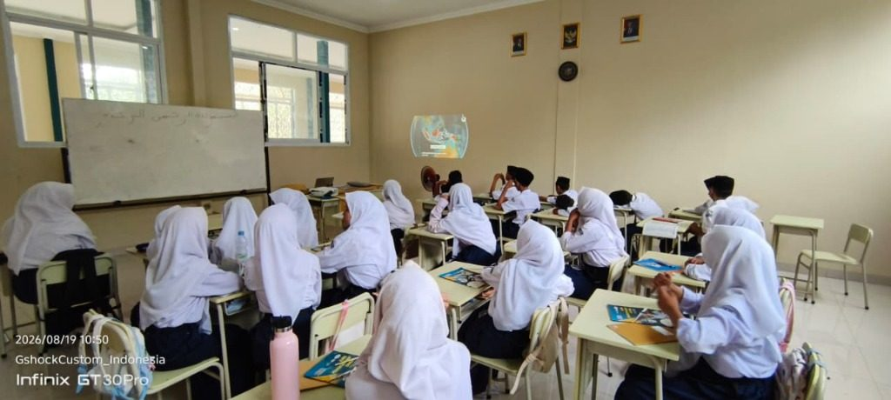
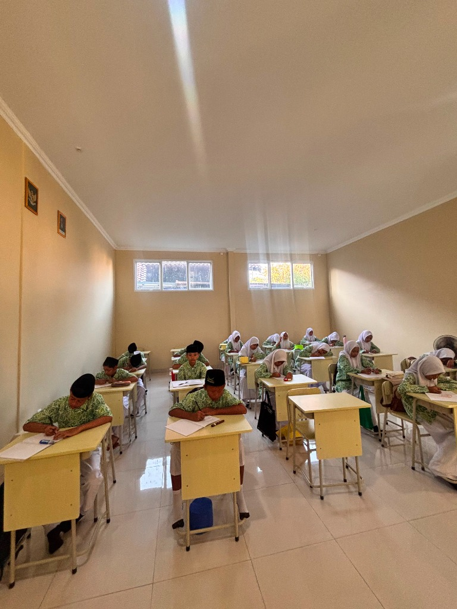
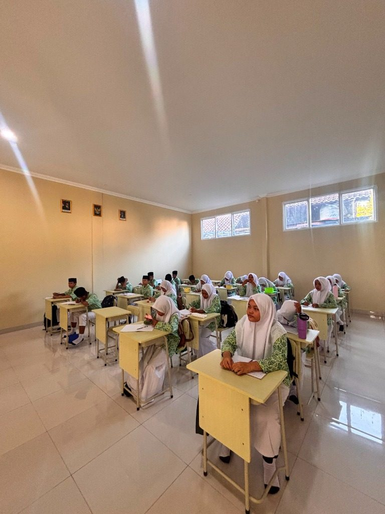
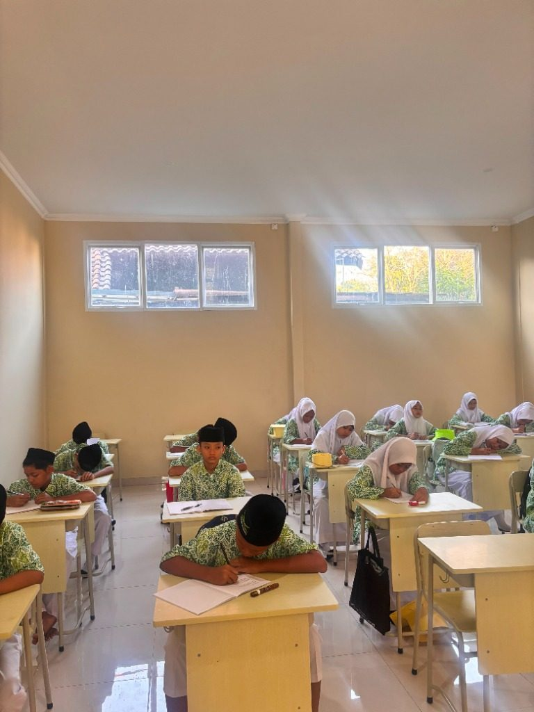

Website Resmi
SMP Annida
Membangun Generasi Cerdas, Berkarakter, dan Unggul Berlandaskan Nilai Islam.
Membangun Generasi Cerdas, Berkarakter, dan Unggul Berlandaskan Nilai Islam.








Visi: Terwujudnya generasi Qur'ani yang cerdas, terampil, dan berakhlakul karimah dalam menghadapi tantangan global.
Misi: Menyelenggarakan pendidikan yang memadukan kurikulum nasional dan nilai-nilai Islam, serta membina karakter siswa melalui pembiasaan ibadah harian.
SMP Annida didirikan dengan semangat luhur untuk memberikan alternatif pendidikan tingkat menengah yang tidak hanya berfokus pada keunggulan akademik semata, tetapi juga pada pembentukan pondasi akhlak yang kuat. Dedikasi kami adalah mencetak pemimpin masa depan.
Menerapkan sistem pembelajaran berbasis proyek yang interaktif untuk memacu kreativitas siswa.
Tahfidz Al-Qur'an, Bahasa Arab, dan Fiqih menjadi mata pelajaran unggulan yang diajarkan setiap hari.
Diasuh oleh guru-guru muda profesional, lulusan universitas terkemuka yang berdedikasi tinggi.
Kami mendukung penyaluran bakat dan minat siswa melalui berbagai wadah ekstrakurikuler yang aktif dan berprestasi.
Jangan lewatkan kesempatan untuk bergabung bersama SMP Annida. Kuota terbatas untuk gelombang pertama.
Daftar Sekarang →Untuk pertanyaan lebih mendalam mengenai pendaftaran, kurikulum sekolah, fasilitas, atau informasi lainnya, Anda dapat mengunjungi kantor kami atau menghubungi kami melalui saluran berikut:
Gg. Al-Ikhlas No.47, Cibening, Setu, Bekasi, Jawa Barat 17320